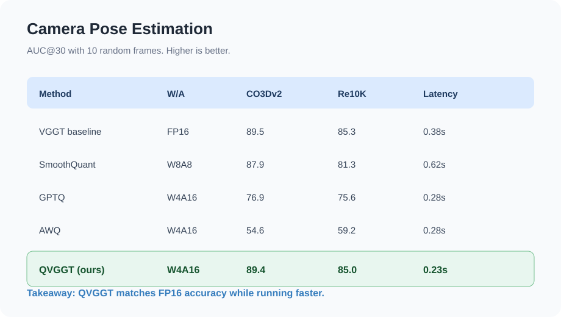
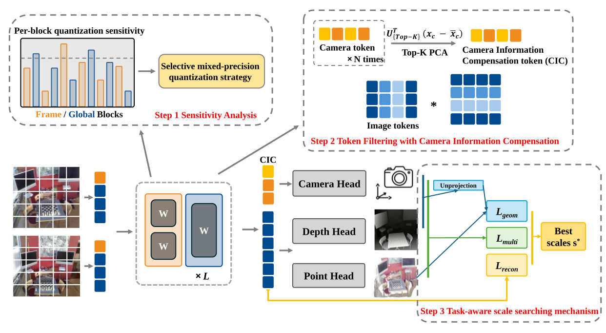
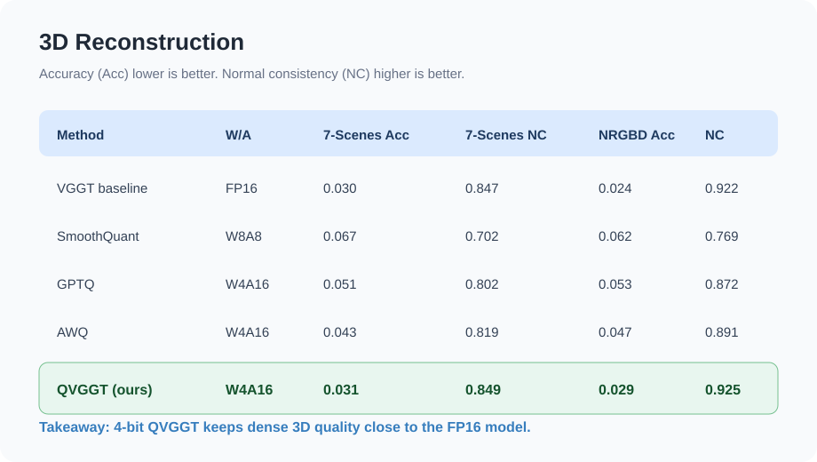
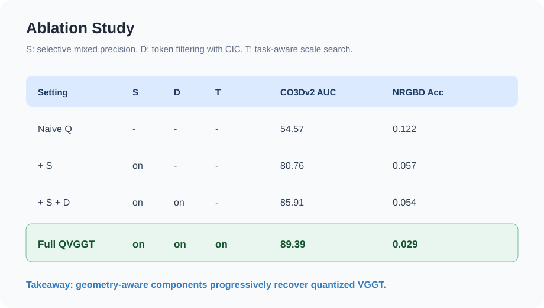
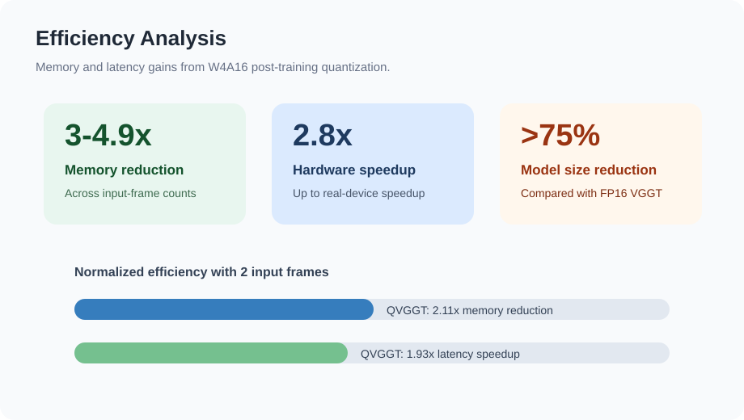

Camera Pose Estimation
Near-lossless pose accuracy under W4A16.
QVGGT preserves VGGT camera pose performance on CO3Dv2 and RealEstate10K while reducing latency.

Add a short description of the qualitative visualization here.
Estimating 3D attributes directly from images has advanced rapidly with the Visual Geometry Grounded Transformer (VGGT), which predicts camera parameters, depth maps, and point clouds in a single forward pass. However, its 1.2B-parameter scale severely limits deployment on resource-constrained platforms such as UAVs and mobile AR devices. To address this limitation, we introduce QVGGT, a tailored quantization framework designed to compress VGGT.
Our approach starts from the observation that transformer blocks within VGGT exhibit heterogeneous sensitivity to quantization. We thus analyze per-block quantization sensitivity and propose a selective mixed-precision strategy that allocates higher precision to the most fragile transformer blocks. To address the amplification of quantization error caused by high-variance camera and register tokens, we further introduce token filtering with camera information compensation, which removes these outliers from activation calibration and restores their geometric cues using a PCA-derived global compensation token. Finally, we develop a task-aware scale search mechanism that evaluates candidate quantization scales not only through layer reconstruction but also through multi-head supervision and cross-head geometric consistency among camera poses, depth maps, and point maps.
Extensive experiments on multiple geometry perception benchmarks demonstrate that QVGGT achieves near-lossless W4A16 quantization, preserving the accuracy of all 3D prediction heads while delivering 3$\sim$4.9$\times$ memory reduction and up to 2.8$\times$ real hardware speedup over FP32.
Our approach makes high-fidelity 3D perception feasible on edge devices, enabling practical deployment of feed-forward 3D reconstruction models in real-world constrained environments.

Overview of QVGGT. Our framework consists of three components to preserve VGGT performance under low-bit quantization. Step 1: Sensitivity analysis. We estimate per-block quantization sensitivity across frame-wise and global transformer blocks, enabling selective mixed-precision assignment for critical layers. Step 2: Token filtering with camera information compensation. To mitigate outlier-dominated scale estimation, we exclude camera and register tokens during activation statistics collection. A camera information compensation (CIC) token is then constructed via top-K PCA over camera-token activations and injected into the camera head. Step 3: Task-aware scale search. We select quantization scales using a task-aware objective that combines multi-head losses, geometric consistency, and reconstruction error, jointly optimizing accuracy and robustness across all heads.
Camera Pose Estimation
QVGGT preserves VGGT camera pose performance on CO3Dv2 and RealEstate10K while reducing latency.

3D Reconstruction
On 7-Scenes and NRGBD, QVGGT keeps accuracy, completeness, and normal consistency stable after quantization.

Ablation Study
Selective mixed precision, CIC, and task-aware scale search progressively recover camera and reconstruction accuracy.

Efficiency Analysis
QVGGT reduces memory pressure and improves latency, making VGGT-style 3D perception more deployable.
